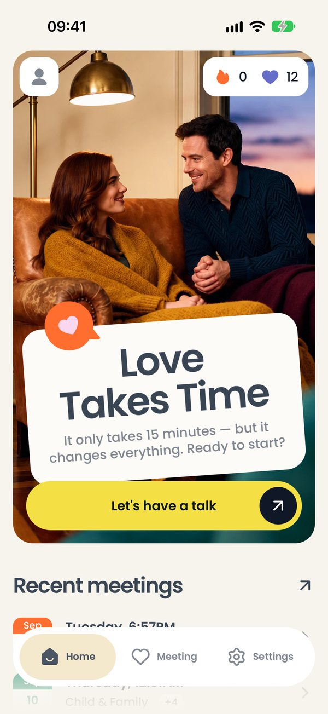

01
Главный экран
Что на экране
Большая фотография, на ней карточка Love Takes Time: «всего пятнадцать минут, но это меняет всё». Под ней жёлтая кнопка Let's have a talk — главное действие приложения.
В левом верхнем углу — значок человека, в правом — плашка с двумя числами: огонёк и сердце.
Внизу парит панель с тремя вкладками: Home, Meeting, Settings.
Что можно сделать
- Let's have a talk или вкладка Meeting — начать встречу.
- Значок человека — открыть настройки.
- Плашка с числами — узнать, что они значат.
- Прокрутить вниз — увидеть последние встречи.
Как это работает. Всё на экране читается из памяти телефона, интернет для него не нужен.